Networking Fundamentals II Tutorial: Master VPN, Topology & Wireless Config
This networking fundamentals tutorial provides step-by-step guidance for beginners and intermediate learners mastering advanced network concepts. Learn how to configure VPN connections, design network topology architectures, implement wireless security protocols, and troubleshoot common networking issues. This comprehensive guide covers essential topics including LAN vs WAN networks, Ethernet cabling standards, Cisco device configuration, and hands-on virtual lab projects. Whether you're preparing for CCNA certification, building IT career skills, or enhancing your cybersecurity knowledge, this tutorial bridges theory with practical, enterprise-ready networking expertise. Start building functional networks today with proven methodologies and real-world examples.

Networking Fundamentals II bridges the gap between introductory theory and hands-on, professional practice. It equips learners with the tools to confidently tackle the real challenges of configuring, optimizing, and maintaining modern computer networks, ensuring stable operation, robust security, and efficient data flow in any organization.
Learning Objectives
1. Course Introduction & Objectives
2. Networking Key Terminology & Glossary
6. Cabling Standards & Infrastructure
8. VPN (Virtual Private Network)
9. Conclusion
1. Course Introduction & Objectives
By the end of this tutorial, you will master advanced networking concepts essential for IT professionals. This comprehensive tutorial covers:
- Network Terminology: Master 50+ essential networking terms and acronyms used in professional environments.
- Network Topologies: Understand physical and logical network layouts, including modern three-tier architectures.
- Networking Devices: Compare and configure hubs, switches, routers, and NICs with hands-on labs.
- LAN vs WAN: Distinguish between local and wide area networks with real-world applications.
- Cabling Standards: Learn proper cable selection and wiring for different network scenarios.
- Wireless Networking: Configure SSIDs, encryption, and channel management.
- VPN Implementation: Set up secure remote access and site-to-site connections.
- Practical Labs: Build functional networks using Cisco Packet Tracer with DHCP and VPN configurations.
2. Networking Key Terminology & Glossary
Understanding networking terminology is crucial for professional communication and technical documentation. [1]
Core Networking Terms
| Term | Definition | Real-World Context | Professional Usage |
|---|---|---|---|
| Network | Collection of interconnected devices sharing resources | Home WiFi connecting laptops, phones, printers | "Configure the corporate network for $500$ users" |
| Node | Any device connected to a network | Computer, printer, smartphone, IoT sensor | "The printer node is not responding to ping requests" |
| Protocol | Set of rules governing network communication | HTTP for web browsing, SMTP for email | "We need to implement the HTTPS protocol for security" |
| Bandwidth | Maximum data transfer capacity of a network link | $100$ Mbps internet connection | "Increase bandwidth to handle video conferencing" |
| Latency | Time delay for data to travel from source to destination | $20$ms ping time to server | "High latency is affecting VoIP call quality" |
| Throughput | Actual data transfer rate achieved in real conditions | $85$ Mbps on $100$ Mbps connection | "Monitor throughput during peak business hours" |
| Topology | Physical or logical arrangement of network devices | Star topology in office building | "Design a mesh topology for redundancy" |
Essential Network Acronyms
| Acronym | Full Form | Purpose | When You'll Use It |
|---|---|---|---|
| TCP/IP | Transmission Control Protocol/Internet Protocol | Internet communication standard | Configuring network interfaces and routing |
| DNS | Domain Name System | Translates domain names to IP addresses | Troubleshooting website access issues |
| DHCP | Dynamic Host Configuration Protocol | Automatically assigns IP addresses | Setting up automatic IP management |
| NAT | Network Address Translation | Allows private networks to access internet | Configuring routers and firewalls |
| QoS | Quality of Service | Prioritizes network traffic | Ensuring VoIP and video call quality |
| VLAN | Virtual Local Area Network | Creates separate network segments | Isolating departments or device types |
| VPN | Virtual Private Network | Secure remote network access | Enabling safe remote work connections |
| MAC | Media Access Control | Unique hardware identifier | Troubleshooting switch connectivity |
Quick Reference Cards
Network Troubleshooting Terms
- Ping: Tests connectivity between devices.
- Traceroute: Shows network path and delays.
- ARP: Maps IP addresses to MAC addresses.
- Gateway: Router connecting different networks.
- Subnet: Logical division of larger network.
Performance Measurement Terms
- Jitter: Variation in packet delay times.
- Packet Loss: Percentage of data packets not received.
- MTU: Maximum transmission unit size.
- Duplex: Half (one-way) or full (two-way) communication.
3. Network Topology
Network topology determines how devices connect and communicate, affecting performance, cost, and reliability. [2]
Physical Network Topologies
Bus Topology
Bus topology is a type of network design, or layout, in which all devices (computers, printers, etc.) are connected to a single central cable called the "bus." This main cable acts as a shared communication medium, and signals are sent along the bus, allowing devices to communicate with each other.
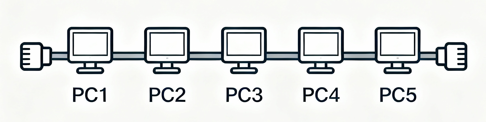
Key Features of Bus Topology
- Single Backbone Cable: All network devices are joined to one central cable.
- Data Transmission: When a device sends data, the signal travels in both directions along the bus to all other devices.
- Terminators: Both ends of the bus cable have terminators to prevent signal bounce (interference from reflections).
- Simple Design: Easy and inexpensive to set up for small networks.
Advantages:
- Low cost implementation.
- Simple installation.
- Requires minimal cabling.
Disadvantages:
- Single point of failure (cable break affects entire network).
- Difficult to troubleshoot problems.
- Performance degrades with more devices.
- Limited cable length (185-500 meters).
Real-World Usage: Legacy systems, temporary networks, small office setups (mostly obsolete).
Star Topology
Star Topology is a network layout in which all devices (computers, printers, etc.) are individually connected to a central device such as a switch or hub. This central device acts as the main point for all network communication.
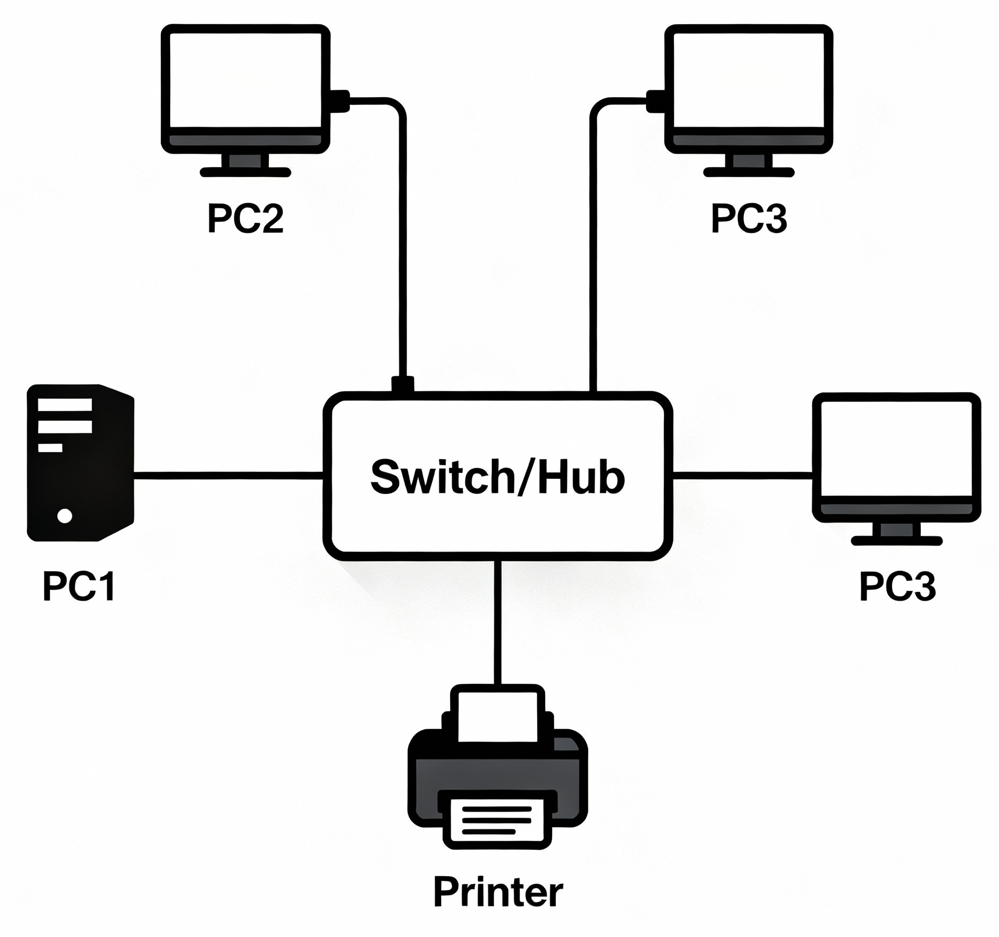
[Switch/Hub] is the central device.
Key Features of Star Topology
- Central Connection Poin: Every device has a dedicated cable connecting it directly to the central switch or hub.
- Data Transmission: Data sent from any device has to pass through the central device before reaching its destination.
- Isolation: Both ends of the bus cable have terminators to prevent signal bounce (interference from reflections).
Advantages:
- Easy to install and manage.
- Failure of one device doesn't affect others.
- Simple troubleshooting (isolate individual connections).
- Easy to add/remove devices.
Disadvantages:
- Central device failure brings down entire network.
- Requires more cable than bus topology.
- Limited by central device capabilities.
Real-World Usage: Office networks, home routers, enterprise LANs
Ring Topology
Ring Topology is a type of network layout in which each device (node) is connected to exactly two other devices, forming a closed loop or ring. Data travels around the ring in one or both directions, passing through each device until it reaches its destination.
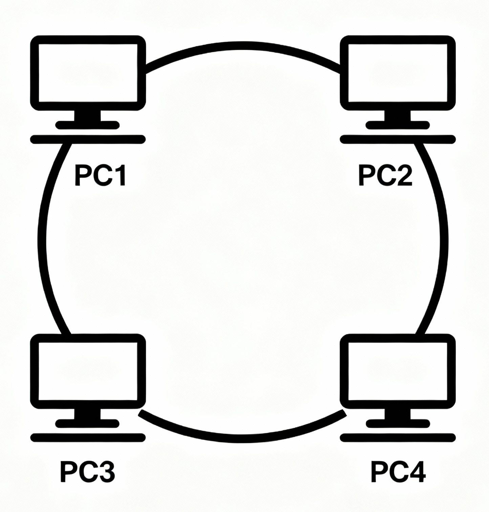
Key Features of Ring Topology
- Central Connection Point: Every device has a dedicated cable connecting it directly to the central switch or hub.
- Data Transmission: Data sent from any device has to pass through the central device before reaching its destination.
- Isolation: If one cable fails, only the attached device is affected; the rest of the network continues to function.
Advantages:
- Equal access for all devices.
- Predictable performance.
- No central point of failure.
- Efficient for high-traffic networks.
Disadvantages:
- Entire network fails if one connection breaks.
- Difficult to add/remove devices.
- Troubleshooting is complex.
- Slower than switched networks.
Real-World Usage: IBM Token Ring networks (legacy), metropolitan area networks, some industrial control systems. [3]
Mesh Topology
Mesh Topology is a network layout in which every device (node) is directly connected to every other device in the network, creating a web-like structure with multiple pathways for data to travel.
Full Mesh: Partial Mesh:
PC1 --- PC2 PC1 --- PC2
| X | | |
| X X | PC4 --- PC3
PC4 --- PC3
Key Features of Mesh Topology
- Direct Connections: Each node connects directly to all others (full mesh), or at least to several others (partial mesh).
- Redundant Paths: Multiple paths exist between any two devices, providing alternative routes if one connection fails.
- High Reliability: Network remains operational even if several connections or devices fail.
Advantages:
- Maximum redundancy and reliability.
- No single point of failure.
- Self-healing (automatic rerouting).
- High security (difficult to intercept).
Disadvantages:
- Expensive (many cables and interfaces required).
- Complex installation and management.
- High maintenance overhead.
Real-World Usage: Internet backbone, military networks, financial trading systems, data centers.
Logical Network Topologies
Logical topology describes how data flows through the network, regardless of physical connections.
Logical Bus
- All devices share same communication medium.
- Ethernet uses logical bus over physical star.
- CSMA/CD protocol manages access.
Logical Ring
- Data passes through each device sequentially.
- Token Ring and FDDI use this approach.
- Deterministic access control.
Modern Network Architectures
The three-tier network architecture is a well-established approach to organizing large campus or enterprise networks for scalability, reliability, and manageability. It divides the network into three distinct layers, each with specialized functions:
Three-Tier Architecture
CORE LAYER (Layer 3)
├── High-speed routers
├── Redundant links
└── Campus backbone
DISTRIBUTION LAYER (Layer 2/3)
├── Departmental aggregation
├── Policy enforcement
└── VLAN routing
ACCESS LAYER (Layer 2)
├── End-user connectivity
├── Switches and wireless APs
└── Port security
1. Core Layer (Layer 3)
Role: The backbone of the entire network, responsible for high-speed, reliable transport of large volumes of data.
Functions:
- High-speed routers: Fast Layer 3 (IP) routing to efficiently move packets between different parts of the network.
- Redundant links: Multiple paths and links to ensure continuity and failover; critical for minimizing downtime.
- Campus backbone: Connects multiple buildings, distribution layers, and major sections of an organization.
Explanation:
The core layer is designed for speed and reliability—not for network access, filtering, or policy enforcement. Its focus is transporting traffic as quickly as possible across the enterprise.
2. Distribution Layer (Layer 2/3)
Role: The "middleman" between the core and access layers; aggregates connectivity and enforces controls.
Functions:
- Departmental aggregation: Connects multiple access layer switches, typically by department or building.
- Policy enforcement: Implements access control lists (ACLs), security policies, and Quality of Service (QoS).
- VLAN routing: Performs routing between VLANs (virtual LANs) using Layer 3 switches or routers.
Explanation:
The distribution layer is responsible for organizing traffic from access devices, enforcing organizational policies, and managing inter-VLAN routing. It often acts as the boundary for network segmentation and security controls.
3. Access Layer (Layer 2)
Role: Provides end-user connectivity—where devices such as computers, phones, and printers join the network.
Functions:
- End-user connectivity: Direct connections for devices via Ethernet or wireless.
- Switches and wireless APs: Layer 2 switches and wireless Access Points distribute connections to individual users.
- Port security: Controls which devices are allowed to connect to the network ports, preventing unauthorized access.
Explanation:
The access layer interfaces with users and devices. It’s optimized for flexibility, density, and security controls at the port level, such as MAC filtering and limiting physical connections.
Summary Table
| Layer | Primary Devices | Main Functions |
|---|---|---|
| Core (L3) | Routers, backbone switches | High-speed routing, redundancy, packet switching |
| Distribution (L2/L3) | Layer 3 switches, routers | Aggregation, policy, VLAN routing, boundary definition |
| Access (L2) | Switches, wireless APs | User/device connectivity, security, PoE, collision domain control |
Diagram:
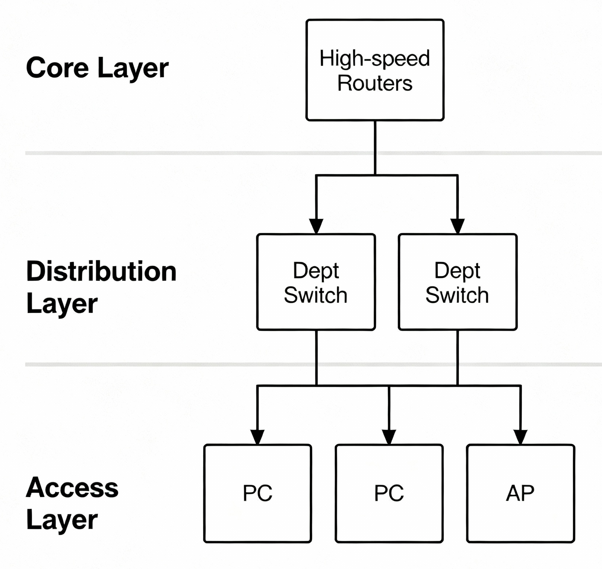
Why Use Three-Tier Architecture?
- Scalability: Easily grow the network by adding more access and distribution devices.
- Performance: Dedicated layers prevent congestion and allow optimization for specific network functions.
- Manageability & Security: Policies and configurations are easier to organize and enforce at appropriate layers.
- Reliability: Redundant paths in the core ensure network resilience.
Core Layer Functions:
- High-speed packet forwarding.
- Redundancy and fault tolerance.
- Connection to internet and WAN.
- No policy enforcement (speed priority).
Distribution Layer Functions:
- Aggregates access layer connections.
- Implements security policies.
- VLAN routing and filtering.
- Load balancing and QoS.
Access Layer Functions:
- Connects end-user devices.
- Port security and authentication.
- Power over Ethernet (PoE).
- Basic switching functions.
Topology Selection Criteria
| Criteria | Bus | Star | Ring | Mesh | Hybrid |
|---|---|---|---|---|---|
| Cost | Low | Medium | Medium | High | Variable |
| Scalability | Poor | Good | Fair | Excellent | Excellent |
| Fault Tolerance | Poor | Fair | Poor | Excellent | Good |
| Performance | Decreases | Consistent | Consistent | High | Optimized |
| Management | Difficult | Easy | Complex | Complex | Moderate |
| Best Use Case | Legacy/Temporary | Office LANs | Industrial | Critical systems | Enterprise |
Topology Troubleshooting Scenarios
Single Points of Failure
- Star topology: Central hub/switch failure.
- Tree topology: Root node failure.
- Solution: Implement redundant central devices
Network Bottlenecks
- Bus topology: Shared medium saturation.
- Tree topology: Central device bandwidth limits.
- Solution:Upgrade central device or implement load balancing.
Single Points of Failure
- Star topology: Central hub/switch failure.
- Tree topology: Root node failure.
- Solution: Implement redundant central devices
4. Networking Devices
Understanding the differences between networking devices is crucial for proper network design and troubleshooting. [4] [5]
Device Comparison Table
| Device | OSI Layer | Function | Intelligence Level | Data Unit | Addressing |
|---|---|---|---|---|---|
| Hub | Physical (1) | Repeats signals to all ports | None | Bits | None |
| Switch | Data Link (2) | Forwards based on MAC address | Medium | Frames | MAC addresses |
| Router | Network (3) | Routes between networks (LANs/WANs) | High | Packets | IP addresses |
| NIC | Physical/Data Link (1/2) | Network interface for devices (media access) | Basic | Bits/Frames | MAC address |
Hub (Network Hub)
A hub (network hub) is a basic networking device used to connect multiple computers or devices together in a local area network (LAN). Its primary purpose is to serve as a central connection point for devices in a network segment.
Real-World Analogy: The Loudspeaker in a Classroom
Imagine a classroom where students want to talk to each other, but they all have to use a single loudspeaker at the front.
- Whenever a student (computer) has something to say (sends data), they walk to the loudspeaker (hub) and speak into it.
- Whatever is said into the loudspeaker is heard by everyone in the classroom (all connected devices), not just the person it was meant for.
- The right person listens and responds, others just ignore what wasn't for them.
Step-By-Step Working of a Hub
- A computer sends data to the hub:
- The hub receives the data:
- The hub broadcasts the data to all connected devices:
- Only the intended recipient accepts it, others discard:
For example, PC1 wants to send a message to PC3. PC1 sends the data to the hub.
The hub takes in the electrical signal from PC1.
The hub instantly repeats the signal—sending the data out to all of its ports. This means every connected PC (PC2, PC3, PC4, etc.) gets the same data.
Each computer checks if the data is meant for it. PC3, seeing it’s for itself, keeps the data. The others (PC2, PC4) ignore it.
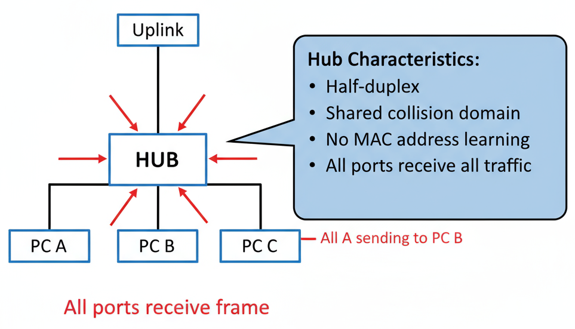
Characteristics:
- Physical layer device (Layer 1).
- Multiport repeater.
- Half-duplex communication.
- Single collision domain.
- Shared bandwidth among all ports.
Modern Usage:
- Largely obsolete in modern networks.
- Replaced by switches for better performance.
- Still used in some legacy industrial systems.
Switch (Network Switch)
A switch (network switch) is a device that connects multiple computers or devices in a network and smartly sends data only to the device it's meant for.
Real-World Analogy:
Think of a switch like a post office clerk. If you hand over several letters for neighbors in your town, the clerk puts each letter directly into the correct mailbox. Only the person with that mailbox gets the letter; no one else does. This is how switches deliver data in a network.
How Does a Switch Work?
- A device sends data to the switch:
- The switch checks the MAC address table:
- The switch forwards data only to the target device:
- Devices can talk at the same time without problems:
For example, Computer A wants to send a file to Computer C. It sends the file to the switch.
Every device has its own unique MAC address (like a house address). The switch keeps a list (table) of which MAC address is on which port (plug).
Instead of sending the file to ALL computers, the switch looks up the destination MAC address and sends the data straight to Computer C's port—no one else gets the file.
Because the switch is smart and sends data only where it’s needed, multiple computers can communicate at once, with no interruptions or data “collisions”.
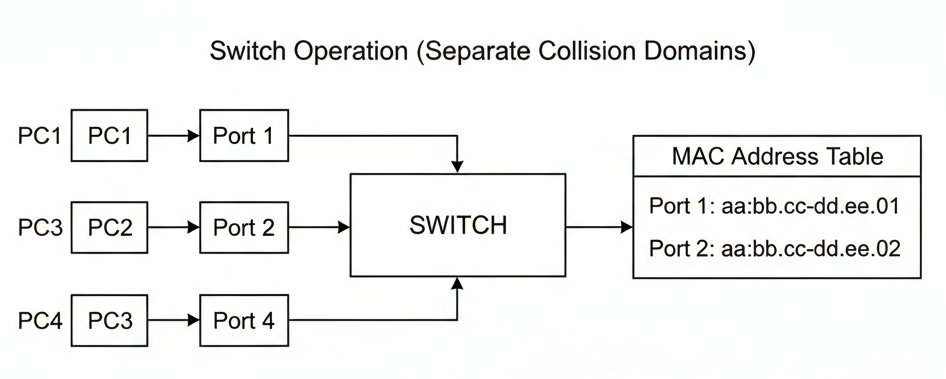
Characteristics:
- Data Link layer device (Layer 2).
- Maintains MAC address table.
- Full-duplex communication.
- Each port is separate collision domain.
- Dedicated bandwidth per port.
Key Features:
- MAC Address Learning: Builds table of device locations.
- Forwarding/Filtering: Sends frames only where needed.
- Loop Prevention: Spanning Tree Protocol support.
- VLANs: Creates virtual network segments
Configuration Example:
Switch(config)# interface fastethernet0/1
Switch(config-if)# switchport mode access
Switch(config-if)# switchport access vlan 10
Router (Network Router)
A router (network router) is a device that connects different networks together and directs data packets to their correct destinations.
Real-World Analogy:
Think of a router like a traffic police officer at a busy intersection. The officer checks where cars want to go (the destination address) and directs each car down the right road so everything arrives safely and smoothly. Or, think of it as a GPS for your data packets.
How Does a Router Work?
- A device sends data to the router:
- The router receives the data:
- Router checks the destination IP address:
- Router sends the data on the best path:
For example, your laptop sends a web request.
The router checks the Internet Protocol (IP) address on the data packet.
The router looks at its routing table to figure out the best path for the data.
If the destination is another local device, the router sends it directly. If it needs to go to the Internet, the router forwards it to the next router or to your Internet Service Provider (ISP).
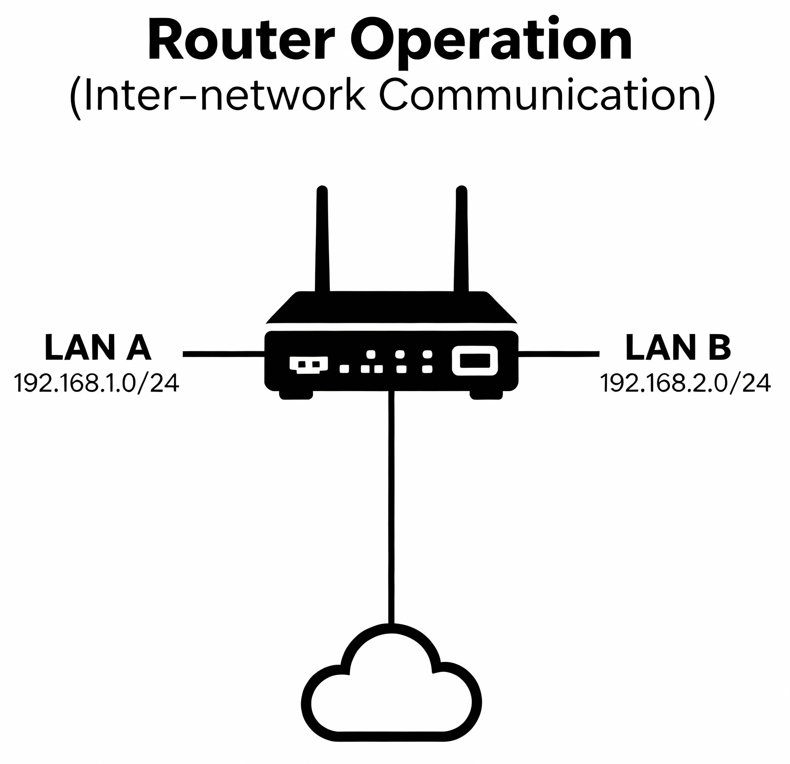
Characteristics:
- Network layer device (Layer 3).
- Routes packets between different networks.
- Maintains routing table.
- Connects LANs, WANs, and internet.
- Provides network segmentation.
Key Features:
- Routing: Path determination between networks.
- NAT: Network Address Translation for private networks.
- DHCP: Automatic IP address assignment.
- Firewall: Basic security filtering.
- QoS: Traffic prioritization
Configuration Example:
Router(config)# interface gigabitethernet0/0
Router(config-if)# ip address 192.168.1.1 255.255.255.0
Router(config-if)# no shutdown
Router(config)# ip route 0.0.0.0 0.0.0.0 203.0.113.1
Network Interface Card (NIC)
A Network Interface Card (NIC) is a small hardware component inside your computer that acts as both a translator and a passport for connecting to networks like the internet.
How Does a NIC Work?
- Translator:
- For Ethernet, the NIC turns digital data into electrical pulses that travel through wires.
- For Wi-Fi, it turns the data into radio waves sent through the air.
- When data arrives from the network, the NIC translates it from signals (pulses/radio waves) back into digital data your computer understands.
- Passport:
Your computer only understands digital data (ones and zeros). But to send this data over a network—whether through cables (Ethernet) or wireless signals (Wi-Fi)—the NIC converts digital information:
Every NIC has a unique address called a MAC address (like a passport number). This lets networks recognize your device, so your computer gets the information meant for it and not someone else's.
Characteristics:
- Physical/Data Link layer device (Layer 1/2).
- Provides network connectivity for end devices.
- Has unique MAC address.
- Converts between digital data and network signals.
- Available as wired (Ethernet) or wireless (Wi-Fi).
Functions:
- Media Access: Controls when device can transmit.
- Error Detection: Checks frame integrity.
- Address Recognition: Filters frames for device.
- Protocol Support: Implements Ethernet, Wi-Fi standards.
Types:
- Ethernet NIC: RJ-45 connector, 1 Gbps typical.
- Wireless NIC: 802.11ac/ax, multiple antennas.
- Server NICs: Multiple ports, high-speed (10/25/40 Gbps).
Network Interface Card (NIC)
| NIC Type | Speed | Connector | Use Case |
|---|---|---|---|
| Ethernet | 10 Mbps - 100 Gbps | RJ-45, SFP+ | Wired LAN connections |
| Wireless | 54 Mbps - 9.6 Gbps | Internal antenna | WiFi connectivity |
| Fiber | 1 Gbps - 400 Gbps | SC, LC, MPO | High-speed, long-distance |
Device Selection Guide
| Scenario | Recommended Device | Reason |
|---|---|---|
| Small home network | Router with built-in switch | Cost-effective, multiple functions |
| Office department | Managed switch | VLAN support, port security |
| Building backbone | Layer 3 switch | High-speed inter-VLAN routing |
| Internet connection | Router with WAN interface | NAT, firewall, routing protocols |
| Data center | Top-of-rack switches | High port density, low latency |
5. LAN vs WAN Networks
Understanding the distinction between Local Area Networks (LANs) and Wide Area Networks (WANs) is essential for network planning and implementation.
Local Area Network (LAN)
Definition: Network covering small geographical area, typically single building or campus.
Real-World Examples:
- Home network connecting computers, phones, smart devices.
- Office network connecting workstations, printers, servers.
- School computer lab with 30 student computers.
- Manufacturing floor with industrial control systems.
LAN Examples:
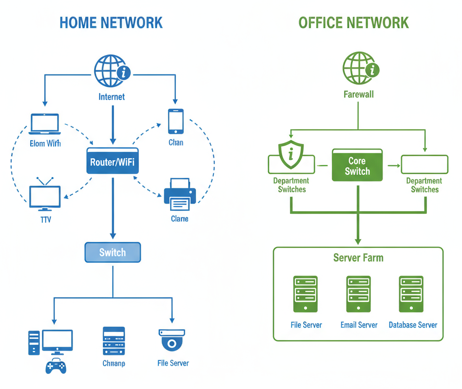
Common LAN Technologies:
| Technology | Speed | Cable Type | Distance Limit |
|---|---|---|---|
| Fast Ethernet | 100 Mbps | Cat5e | 100 meters |
| Gigabit Ethernet | 1 Gbps | Cat6 | 100 meters |
| 10 Gigabit Ethernet | 10 Gbps | Cat6a/Fiber | 100m/10km |
| Wi-Fi 6 | 1-9 Gbps | Wireless | ~70 meters |
Wide Area Network (WAN)
Definition: Network spanning large geographical areas, connecting multiple LANs across cities, countries, or continents.
Real-World Examples:
- Corporate headquarters connecting to branch offices.
- Internet connecting global networks.
- Bank ATM network connecting to central servers.
- Cloud services accessed from multiple locations.
WAN Examples:
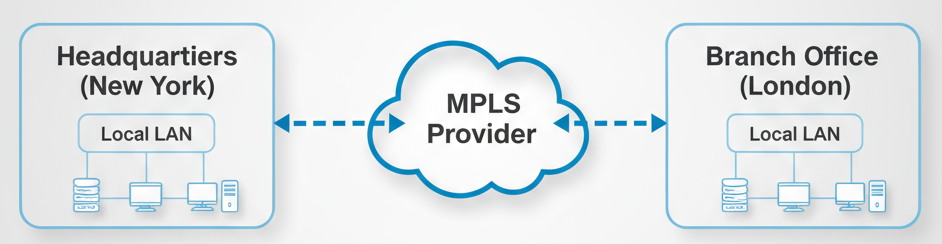
Common WAN Technologies:
| Technology | Speed Range | Use Case | Typical Cost |
|---|---|---|---|
| DSL | 1-100 Mbps | Small business internet | $50-200/month |
| Cable Internet | 10-1000 Mbps | Home/small office | $30-150/month |
| Fiber Internet | 100 Mbps-10 Gbps | Enterprise connectivity | $200-5000/month |
| MPLS | 1 Mbps-10 Gbps | Corporate networks | $500-10000/month |
| Satellite | 1-100 Mbps | Remote locations | $100-1000/month |
LAN vs WAN Comparison
| Aspect | LAN (Local Area Network) | WAN (Wide Area Network) |
|---|---|---|
| Geographic Coverage | Building/Campus | City/Country/Global |
| Ownership | Private | Leased/Public |
| Speed | Very High (1-100+ Gbps) | Variable (1 Mbps-10 Gbps) |
| Latency | Very Low (< 1ms) | Higher (10-300ms) |
| Error Rate | Very Low | Higher |
| Security | Inherently more secure | Requires additional security |
| Cost | Low operational cost | High bandwidth/leasing costs |
| Management | Local IT team | Service provider + local team |
| Reliability | High (redundant paths) | Depends on service provider |
| Technology | Ethernet, WiFi | MPLS, Internet, Satellite, Cellular |
Network Design Considerations
LAN Design Priorities:
- Performance: Minimize latency and maximize throughput.
- Security: Control physical and logical access.
- Scalability: Easy addition of new devices and users.
- Cost: Balance performance with budget constraints.
WAN Design Priorities:
- Connectivity: Reliable links between locations.
- Bandwidth: Adequate capacity for applications.
- Redundancy: Backup connections for critical links.
- Security: Encryption and access control over public networks.
6. Cabling Standards & Infrastructure
Proper cabling is the foundation of reliable network performance.Cabling Standards & Infrastructure refer to the official rules, guidelines, and physical systems used to organize, install, and manage wires (like Ethernet or fiber cables) that connect network devices. These standards ensure cables are safe, reliable, and compatible—helping networks work smoothly and making it easy to expand or troubleshoot.
Ethernet Cable Categories
An Ethernet cable is a type of wired cable used to connect computers, routers, switches, and other devices in a network, allowing them to communicate and share data quickly. It’s the standard cable for most local area networks (LANs) and looks like a thicker phone cable with special connectors (called RJ45 plugs) on each end.
| Category | Max Speed | Max Distance | Frequency | Applications |
|---|---|---|---|---|
| Cat5e | 1 Gbps | 100 meters | 100 MHz | Basic Gigabit Ethernet |
| Cat6 | 10 Gbps* | 55m (10G), 100m (1G) | 250 MHz | High-performance networks |
| Cat6a | 10 Gbps | 100 meters | 500 MHz | Data centers, future-proofing |
| Cat7 | 10 Gbps | 100 meters | 600 MHz | Shielded applications |
| Cat8 | 25-40 Gbps | 30 meters | 2000 MHz | Data center interconnects |
Straight-Through Cable (Standard)
A Straight-Through Cable is a network cable in which the wiring on both ends follows the same pin order (standard T568A or T568B). This means each wire connects to the corresponding pin at each connector.
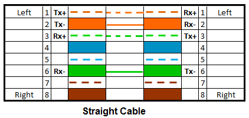
Usage
- PC to switch.
- Router to switch.
- Switch to hub.
Crossover Cable
A crossover cable is a special type of Ethernet cable where the transmit and receive wires are “crossed over.” This means the wires that send signals from one device connect directly to the wires that receive signals on the other device.
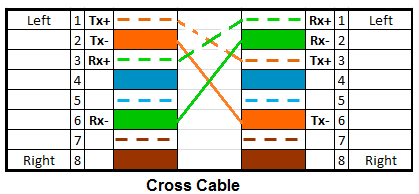
Usage
- PC to PC (direct connection)
- Switch to switch (older equipment).
- Router to router.
- Hub to hub.
Color Code Reference Table
| Wire Pair | T568A (Color/Stripe) | T568B (Color/Stripe) | Function (Standard Use) |
|---|---|---|---|
| Pair 1 (Pin 1 & 2) | Green/White, Green | Orange/White, Orange | Transmit Data (TX+) / (TX-) |
| Pair 2 (Pin 3 & 6) | Orange/White, Orange | Green/White, Green | Receive Data (RX+) / (RX-) |
| Pair 3 (Pin 4 & 5) | Blue/White, Blue | Blue/White, Blue | Bidirectional Data (Voice/Power) |
| Pair 4 (Pin 7 & 8) | Brown/White, Brown | Brown/White, Brown | Bidirectional Data (Voice/Power) |
Cable Testing and Certification
Essential Tests:
- Continuity: All wires connected properly.
- Wire Map: Correct pin-to-pin connections.
- Length: Within category specifications.
- NEXT: Near-End Crosstalk measurements.
- Return Loss: Signal reflection levels.
Certification Tools:
- Fluke DSX-5000 (professional certification).
- Klein Tools VDV Scout Pro (basic testing).
- Ideal NaviTek (mid-range certification).
7. Wireless Networking Basics
Wireless networking lets devices communicate without physical cables, using radio waves. The two most common wireless technologies are:
- Wi-Fi: Used for high-speed data connections in homes, businesses, and public spaces.
- Bluetooth: Used for short-range connections, mainly for pairing smartphones with headphones, speakers, keyboards, and IoT devices.
Benefits of Wireless Connectivity:
- Mobility: : Move freely within the network’s coverage area.
- Easy Setup: No cabling needed, especially useful in homes, offices, or places hard to wire.
- Device Variety: Laptops, smartphones, tablets, smart TVs, printers, wearables, and smart home devices all commonly use wireless connections.
Real-world example: At a coffee shop, customers use their phones and laptops over public Wi-Fi without plugging in a cable.
Wi-Fi Standards Evolution
| Standard | Year | Frequency Bands | Max Speed | Max Range | Key Features |
|---|---|---|---|---|---|
| 802.11n (Wi-Fi 4) | 2009 | 2.4 GHz & 5 GHz | 600 Mbps | ~70 m indoors | MIMO (multiple antennas), channel bonding |
| 802.11ac (Wi-Fi 5) | 2014 | 5 GHz | 6.9 Gbps | ~35 m indoors | MU-MIMO, Beamforming |
| 802.11ax (Wi-Fi 6) | 2019 | 2.4, 5 & 6 GHz | 9.6 Gbps | Up to 80 m indoors | OFDMA, Advanced MU-MIMO, Target Wake Time |
| 802.11be (Wi-Fi 7) | 2024 | 2.4, 5 & 6 GHz | 46 Gbps | Similar to Wi-Fi 6 | Multi-Link Operation, 320 MHz channels, Advanced OFDMA |
Key Terms:
- MIMO (Multiple Input Multiple Output): Multiple antennas send/receive more data at once.
- MU-MIMO (Multi-User MIMO): More than one device can get data simultaneously.
- Beamforming: Directs wireless signals toward devices for stronger connection.
- OFDMA: Splits spectrum efficiently between devices to reduce wait time.
- Channel Bonding: Combines channels for higher speeds.
- Multi-Link Operation: Uses multiple frequency bands (Wi-Fi 7) for faster, more reliable connections.
Practical Impact:
Older devices (Wi-Fi 4/n) are slower and cover more area; newer standards (Wi-Fi 6/7) are much faster, handle more devices well, and reduce lag in busy environments.
Essential Wireless Concepts
SSID (Service Set Identifier):
- The network name shown when you scan for Wi-Fi.
- Naming best practices:
- Use unique, clear names (e.g., "HomeNet_5G").
- Avoid personal info in SSID.
- Hiding SSID can stop casual attempts to join, but isn’t foolproof security.
Example Home Wi-Fi Configuration:
- SSID: HomeNet_5G
- Security: WPA2 or WPA3 (never WEP)
- Channel: 149 (if 5 GHz, to avoid congestion)
- Password: Complex, at least 12+ characters
Wireless Security Protocols
| Protocol | Security Level | Encryption | Key Features | Status/Use Case |
|---|---|---|---|---|
| WEP | Very Low | RC4 | Weak, easy to crack | Obsolete |
| WPA | Low/Older | TKIP | Improved but still weak | Not recommended |
| WPA2 | High | AES-CCMP | Strong, industry standard | Recommended |
| WPA3 | Very High | SAE, AES-CCMP | Strongest, easiest setup, improved resistance to attacks | Recommended for new devices |
Why Obsolete?
WEP can be cracked in minutes; WPA also has vulnerabilities. Always use WPA2 or WPA3 for secure Wi-Fi.
Channel Management
Frequency Bands:
- 2.4 GHz: Greater range, but fewer non-overlapping channels (1, 6, 11). More prone to interference (microwaves, Bluetooth, neighbors).
- 5 GHz: More channels, less crowded, usually faster (but shorter range).
- 6 GHz: New (Wi-Fi 6E), huge capacity, low congestion, very short range.
Channel Widths:
- 20 MHz (least interference, most compatible).
- 40/80/160 MHz (higher speed, risk for interference).
Best Practices:
- Use non-overlapping channels (1, 6, 11 for 2.4 GHz).
- Select channels with least interference using Wi-Fi analysis tools.
- For many access points, stagger channels and lower power to avoid overlap.
Range vs. Speed: Increasing channel width increases speed but may reduce range and add interference.
Wireless Network Design
Site Survey Process:
- Physical Assessment:
- RF Analysis:
- Capacity Planning:
- Security Requirements:
Map walls, furniture, windows—these affect signal.
Use tools/apps to find signal dead zones, measure interference.
Estimate device count for each access point.
Choose secure protocols (WPA2/WPA3). Plan for guest networks.
Access Point (AP) Placement Guidelines:
- Place APs high up on walls or ceilings for best coverage.
- Avoid placing next to metal objects, microwaves, or thick walls.
- For large spaces, use multiple APs with overlapping coverage (but different channels).
- Use directional antennas or beamforming if available.
Example Scenario:
In a school, APs are placed in hallways at ceiling height, with three APs per floor, each set to a unique 5 GHz channel. RF analysis ensures coverage in classrooms.
Diagram: Home Wi-Fi Setup
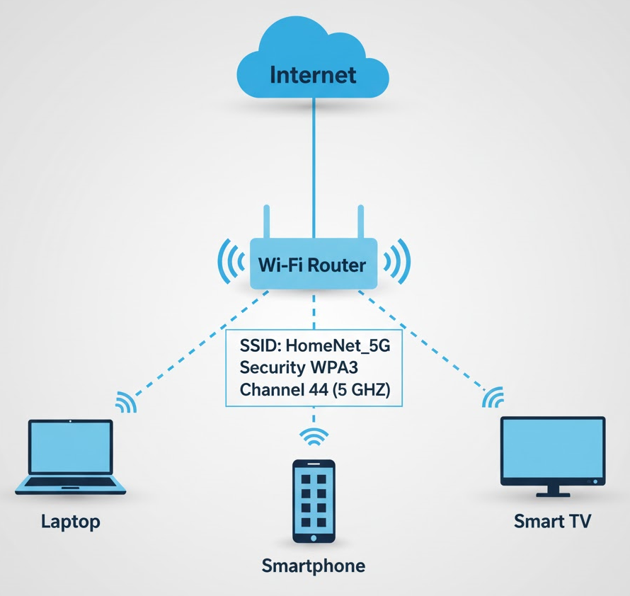
Tips for Designing & Securing your Wireless Network
- Always use WPA2 or WPA3 security.
- Change default passwords for routers/APs.
- Use strong, unique SSIDs.
- Position APs centrally and at height.
- Run regular site surveys for large spaces.
- Separate guest network from main devices.
8. VPN (Virtual Private Network)
VPN Fundamentals
A VPN creates an encrypted tunnel between two points over an untrusted network (typically the internet), allowing secure transmission of private data
What is a VPN?
A VPN creates a secure, encrypted "tunnel" through a public network (like the internet), allowing private data to travel safely between locations.
- Privacy: Encrypts data transmission.
- Security: Protects against eavesdropping and tampering.
- Remote Access: Allows secure access to internal resources.
- Cost Savings: Uses internet instead of expensive leased lines.
- Compliance: Meets regulatory requirements for data protection.
Types of VPNs
Remote Access VPN
A Remote Access VPN is a secure connection that allows individual users to connect to a private network (like a company's internal network) over the internet from a remote location. It encrypts the data sent between the user's device and the network, protecting it from hackers and eavesdroppers. Commonly used by employees working from home, it lets them safely access files, apps, and resources as if they were at the office.
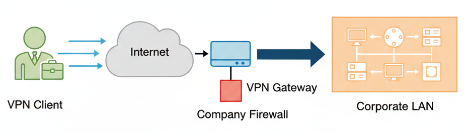
Characteristics:
- Individual users connect to company network.
- Client software required on user devices.
- Dynamic IP address assignment.
- Common protocols: SSL/TLS, IKEv2, OpenVPN.
Use Cases:
- Employees working from home.
- Traveling staff accessing company resources.
- Contractors needing temporary access.
Site-to-Site VPN
A Site-to-Site VPN is a secure connection that links two or more separate networks (such as two different office locations) over the internet. It creates a private, encrypted “tunnel” so that devices at both sites can communicate with each other as if they were on the same local network, protecting data as it travels across public networks. This is commonly used by businesses to connect branch offices securely.
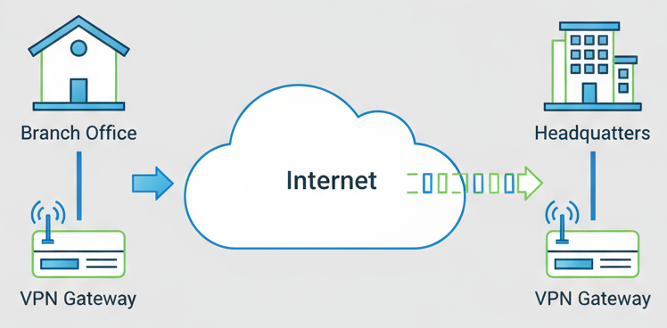
Characteristics:
- Connects entire networks together.
- Always-on connection.
- Static routing configuration.
- Common protocols: IPsec, GRE.
Use Cases:
- Connecting branch offices to headquarters.
- Linking partner company networks.
- Disaster recovery site connectivity.
SSL/TLS VPN
- Browser-based access (no client software).
- Easier to deploy and manage.
- Good for limited access requirements.
IPsec VPN
- Network-layer encryption.
- More complex but more secure.
- Supports multiple authentication methods.
- Better for site-to-site connections
VPN Protocols
| Protocol | Security | Performance | Complexity | Best Use Case |
|---|---|---|---|---|
| IPSec | Excellent | Good | High | Site-to-site, enterprise |
| SSL/TLS | Excellent | Good | Medium | Remote access, web-based |
| OpenVPN | Excellent | Good | Medium | Cross-platform, flexible |
| WireGuard | Excellent | Excellent | Low | Modern, high-performance |
| PPTP | Poor | Excellent | Low | Legacy only (deprecated) |
Basic VPN Configuration Example
Windows Built-in VPN Client Setup:
1. Network Settings → VPN → Add VPN Connection
2. VPN Provider: Windows (built-in)
3. Connection Name: "Company VPN"
4. Server Name: vpn.company.com
5. VPN Type: L2TP/IPsec with pre-shared key
6. Pre-shared key: [provided by IT]
7. Sign-in info: Domain username/password
Testing VPN connectivity:
# Before VPN connection
ipconfig # Note your current IP address
# After VPN connection
ipconfig # Verify new IP address in corporate range
# Test connectivity to internal resources
ping internal-server.company.com
nslookup internal-server.company.com
10. Mini-Project: Virtual Machine Network Lab
Project Objective
Create a controlled networking environment with two virtual machines using static IP addresses. Test connectivity and document the entire process.
Requirements
- Oracle VirtualBox (free download from virtualbox.org).
- Two Ubuntu Desktop VMs.
- Static IP configuration.
- Comprehensive connectivity testing.
- Professional documentation.
Step-by-Step Instructions
Phase 1: Create Virtual Network Infrastructure
Step 1: Install VirtualBox
- Download VirtualBox from https://www.virtualbox.org/.
- Install with default settings.
- Download Ubuntu Desktop ISO from ubuntu.com.
Step 2: Create Host-Only Network
- Open VirtualBox Manager.
- File ⟶ Host Network Manager.
- Click "Create" to make a new host-only network.
- Configure the adapter:
- IPv4 Address: 192.168.56.1
- IPv4 Network Mask: 255.255.255.0
- DHCP Server: Disable (we'll use static IPs)
Phase 2: Create and Configure Virtual Machines
Step 3: Create First Virtual Machine
- New ⟶ Name: "NetworkLab-VM1"
- Type: Linux, Version: Ubuntu (64-bit)
- Memory: 2048 MB
- Create Virtual Hard Disk: 20 GB
- Settings ⟶ Network:
- Adapter 1: Host-only Adapter
- Name: vboxnet0
Step 4: Create Second Virtual Machine
- New ⟶ Name: "NetworkLab-VM2"
- Same specifications as VM1
- Settings ⟶ Network:
- Adapter 1: Host-only Adapter
- Name: vboxnet0
Step 5: Install Ubuntu on Both VMs
- Start each VM and install Ubuntu Desktop.
- Create user accounts: student1 and student2.
- Complete installation and reboot.
Phase 3: Network Configuration
Step 6: Configure Static IP on VM1
# Check interface name
ip link show
# Edit network configuration
sudo nano /etc/netplan/00-installer-config.yaml
VM1 Configuration:
network:
version: 2
ethernets:
enp0s3: # Replace with your interface name
dhcp4: false
addresses: [192.168.56.10/24]
nameservers:
addresses: [8.8.8.8, 8.8.4.4]
Step 7: Configure Static IP on VM2
VM2 Configuration:
network:
version: 2
ethernets:
enp0s3:
dhcp4: false
addresses: [192.168.56.11/24]
nameservers:
addresses: [8.8.8.8, 8.8.4.4]
Apply configurations on both VMs:
sudo netplan apply
ip addr show
Phase 4: Connectivity Testing
Step 8: Basic Connectivity Tests
# From VM1 (192.168.56.10):
ping 127.0.0.1 # Test localhost
ping 192.168.56.10 # Test own IP
ping 192.168.56.11 # Test VM2
arp -a # Check ARP table
# From VM2 (192.168.56.11):
ping 127.0.0.1 # Test localhost
ping 192.168.56.11 # Test own IP
ping 192.168.56.10 # Test VM1
arp -a # Check ARP table/code>
Step 9: Advanced Network Testing
# Network discovery
nmap -sn 192.168.56.0/24 # Scan for active hosts
# Detailed connectivity analysis
traceroute 192.168.56.10 # Should show 1 hop (direct)
Expected Results Documentation
Create a project report with these sections:
1. Network Topology Diagram
┌─────────────────┐ ┌─────────────────┐
│ NetworkLab-VM1 │ │ NetworkLab-VM2 │
│ 192.168.56.10 │ │ 192.168.56.11 │
└─────────┬───────┘ └─────────┬───────┘
│ │
└────────┬──────────────────┘
│
┌──────────┴───────────┐
│ VirtualBox Host │
│ 192.168.56.1 │
│ (Host-Only Adapter) │
└──────────────────────┘
2. IP Configuration Summary
| VM | Hostname | IP Address | Subnet Mask | Interface | Status |
|---|---|---|---|---|---|
| VM1 | networklab-vm1 | 192.168.56.10 | 255.255.255.0 | enp0s3 | Active |
| VM2 | networklab-vm2 | 192.168.56.11 | 255.255.255.0 | enp0s3 | Active |
3. Connectivity Test Results
# VM1 to VM2 ping results:
PING 192.168.56.11 (192.168.56.11) 56(84) bytes of data.
64 bytes from 192.168.56.11: icmp_seq=1 time=0.234 ms
64 bytes from 192.168.56.11: icmp_seq=2 time=0.187 ms
--- 192.168.56.11 ping statistics ---
2 packets transmitted, 2 received, 0% packet loss
4. ARP Table Analysis
# VM1 ARP table after communication:
Address HWtype HWaddress Flags Mask Iface
192.168.56.11 ether 08:00:27:XX:XX:XX C enp0s3
Troubleshooting Common Issues
Issue: VMs can't ping each other.
- Check: Both VMs are on same virtual network (vboxnet0).
- Check: IP addresses are in same subnet (192.168.56.0/24).
- Check: Netplan configuration applied successfully.
- Test:
sudo netplan --debug apply.
Issue: Network configuration doesn't persist.
- Solution: Ensure YAML indentation is correct in netplan file.
- Check: File permissions:
sudo chmod 644 /etc/netplan/00-installer-config.yaml.
Issue: Can't resolve domain names.
- Solution: Add nameservers to netplan configuration.
- Check:
nslookup google.com.
Project Extensions (Optional)
Advanced Challenges:
- Add a third VM with IP 192.168.56.12.
- Install SSH server on all VMs and test remote connections.
- Set up file sharing using Samba between VMs.
- Monitor network traffic using tcpdump or Wireshark.
- Create different subnets and test routing.
Glossary of Networking Fundamentals Tutorial Terms
| Term | Definition |
|---|---|
| ARP (Address Resolution Protocol) | Protocol used to map IP addresses to MAC addresses on a local network |
| APIPA (Automatic Private IP Addressing) | Feature that automatically assigns IP addresses in the 169.254.0.0/16 range when DHCP is unavailable |
| Broadcast Address | Special address used to send data to all devices on a network segment (e.g., 192.168.1.255) |
| CIDR (Classless Inter-Domain Routing) | Method of IP addressing that uses prefix notation (e.g., /24) to define network portions |
| Class A Network | IP address range 1-126 in first octet, default subnet mask 255.0.0.0, supports 16,777,214 hosts |
| Class B Network | IP address range 128-191 in first octet, default subnet mask 255.255.0.0, supports 65,534 hosts |
| Class C Network | IP address range 192-223 in first octet, default subnet mask 255.255.255.0, supports 254 hosts |
| Default Gateway | Router's IP address that serves as the exit point from a local network to other networks |
| DHCP (Dynamic Host Configuration Protocol) | Network protocol that automatically assigns IP addresses and network configuration to devices |
| DHCP Lease | Time period for which a DHCP-assigned IP address is valid (typically 24 hours) |
| DNS (Domain Name System) | System that translates human-readable domain names (google.com) into IP addresses |
| DNS Cache | Temporary storage of DNS query results to speed up future requests |
| DNS Record Types | Different types of DNS entries: A (IPv4), AAAA (IPv6), MX (mail), NS (nameserver), TXT (text) |
| DORA Process | DHCP four-step process: Discover, Offer, Request, Acknowledge |
| Ethernet | Common network technology for local area networks using cables and MAC addresses |
| Host | Any device connected to a network (computer, printer, phone, etc.) |
| IP Address (IPv4) | 32-bit numerical address used to identify devices on a network (e.g., 192.168.1.100) |
| IP Address (IPv6) | 128-bit alphanumeric address format designed to replace IPv4 (e.g., 2001:db8::1) |
| ISP (Internet Service Provider) | Company that provides internet access and assigns public IP addresses |
| LAN (Local Area Network) | Network covering a small geographic area like home, office, or building |
| Loopback Address | Special IP address (127.0.0.1) that refers to the local machine itself |
| MAC Address | 48-bit unique hardware identifier permanently assigned to network interface cards |
| Multicast | Method of sending data to a specific group of devices simultaneously |
| NAT (Network Address Translation) | Process of translating private IP addresses to public IP addresses |
| Network Address | First IP address in a subnet range, identifies the network itself (not assignable to hosts) |
| Network Interface Card (NIC) | Hardware component that connects a device to a network |
| OSI Model | 7-layer networking model: Physical, Data Link, Network, Transport, Session, Presentation, Application |
| Ping | Network utility used to test connectivity between devices |
| Private IP Address | IP addresses reserved for internal network use (10.x.x.x, 172.16-31.x.x, 192.168.x.x) |
| Public IP Address | Globally unique IP address assigned by ISPs for internet communication |
| RFC 1918 | Internet standard defining private IP address ranges |
| Router | Network device that forwards data between different networks |
| Static IP Address | Manually assigned IP address that doesn't change automatically |
| Subnet | Logical subdivision of an IP network into smaller network segments |
| Subnet Mask | 32-bit number that defines which portion of an IP address represents the network vs. host |
| Subnetting | Process of dividing a large network into smaller, manageable sub-networks |
| Switch | Network device that connects devices within a local network using MAC addresses |
| TCP/IP Model | 4-layer networking model: Network Access, Internet, Transport, Application |
| Traceroute | Network diagnostic tool that shows the path packets take from source to destination |
| Unicast | Method of sending data from one device to another specific device |
| VLAN (Virtual Local Area Network) | Logical grouping of devices on different physical network segments |
| WAN (Wide Area Network) | Network covering a large geographic area, connecting multiple LANs |
| Wi-Fi | Wireless networking technology based on IEEE 802.11 standards |
Additional Networking Terms
| Term | Definition |
|---|---|
| Broadcast Domain | Network segment where broadcast packets are delivered to all connected devices |
| Default Subnet Mask | Standard subnet mask for each IP class (Class A: /8, Class B: /16, Class C: /24) |
| FQDN (Fully Qualified Domain Name) | Complete domain name including hostname and domain (e.g., www.google.com) |
| Hexadecimal | Base-16 number system used for MAC addresses and IPv6 addresses |
| IP Conflict | Error that occurs when two devices have the same IP address on a network |
| Link-Local Address | IP address automatically assigned when DHCP fails (169.254.x.x range) |
| Octet | 8-bit portion of an IPv4 address (each number separated by dots) |
| Port Number | Numerical identifier for specific services or applications (HTTP: 80, HTTPS: 443) |
| Recursive DNS Query | DNS lookup process where servers query other servers to find the answer |
| Reserved IP Ranges | Special-purpose IP addresses not used for regular host addressing |
| Root DNS Servers | Top-level DNS servers that direct queries to appropriate domain servers |
| TTL (Time To Live) | Value that determines how long DNS records are cached |
| Virtual Machine (VM) | Software-based computer system running on physical hardware |
| Wireshark | Network protocol analyzer tool used to capture and examine network traffic |
🏁 Conclusion & Next Steps
Congratulations! 🎉 By completing this Networking Fundamentals I tutorial, you have built a strong foundation in networking that will serve you in both academic and real-world scenarios. You now understand:
✅ IP Addressing & Classes – How devices identify and communicate on a network.
✅ MAC Addresses – The permanent hardware identifiers used at Layer 2.
✅ DNS & DHCP – The services that translate names to IPs and automate address assignment.
✅ OSI & TCP/IP Models – The conceptual and practical frameworks of modern networking.
✅ Subnetting – How to divide and manage networks efficiently.
These concepts are the building blocks of IT and cybersecurity, enabling you to troubleshoot networks, configure devices, and prepare for more advanced topics like firewalls, VLANs, VPNs, penetration testing, and ethical hacking.
When you are comfortable with these fundamentals, move on to Networking Fundamentals II, where you’ll dive into routing, switching, VLANs, NAT, firewalls, and packet analysis — preparing you for real-world IT jobs, ethical hacking, and certification exams (CCNA, CompTIA Network+, etc.).
Keep practicing, stay curious, and turn this knowledge into real-world expertise! 🌐💻
Windows File System
Tutorial
This guide covers the fundamentals of the Windows file structure, including system hierarchy, directories, naming conventions, permissions, and practical tips for organizing and securing files.
Go To TutorialCommon Network Protocols
Info
This tutorial introduces essential network protocols, explaining their functions, security features, and practical roles in networking, development, and cybersecurity.
Go To TutorialAbout Website
DevSpireHub is a beginner-friendly learning platform offering step-by-step tutorials in programming, ethical hacking, networking, automation, and Windows setup. Learn through hands-on projects, clear explanations, and real-world examples using practical tools and open-source resources—no signups, no tracking, just actionable knowledge to accelerate your technical skills.
Color Space
Discover Perfect Palettes
Featured Wallpapers (For desktop)
Download for FREE!
.png)
.png)
.png)
.png)
.png)
.png)